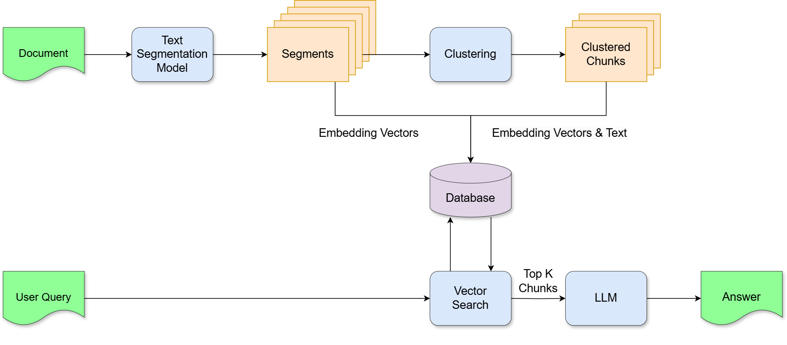
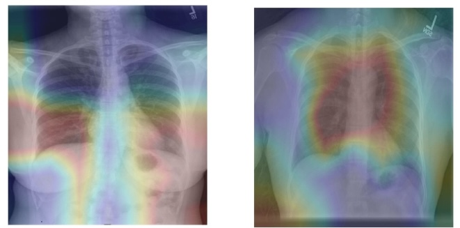
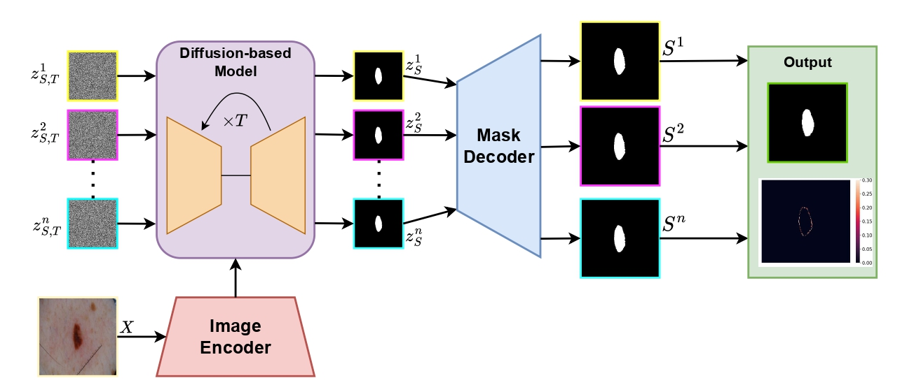
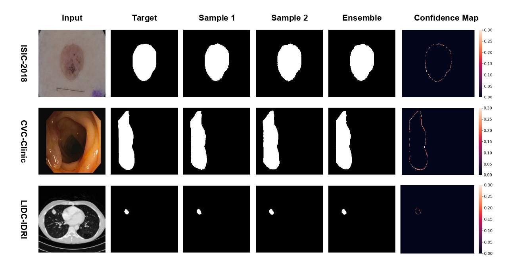
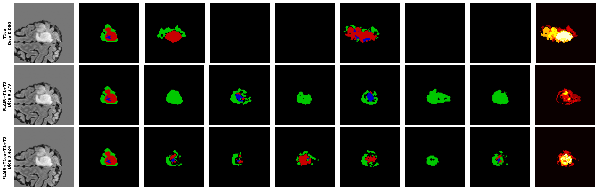

Về bản thân
Giảng viên tạo nguồn & Nghiên cứu viên, Trường Đại học Công nghệ, ĐHQGHN (VNU-UET)
Nghiên cứu viên, Nhóm nghiên cứu liên ngành về Y sinh và Sức khoẻ (IS-VNU)
Nghiên cứu viên, Digital Biology Lab (Amsterdam, làm việc từ xa)
Học vấn
-
03/2024 – 12/2025 · Hà Nội, Việt Nam
Thạc sĩ Khoa học Máy tính — Trường Đại học Công nghệ, ĐHQGHN
Điểm trung bình 3.59 / 4.00 · Luận văn 9.4 / 10 -
09/2019 – 05/2023 · Lincoln, Nebraska, Hoa Kỳ
Cử nhân Khoa học Máy tính — University of Nebraska–Lincoln
Điểm trung bình 3.73 / 4.00 · Học bổng Global Laureate · Dean's List ×4
Quá trình công tác
-
08/2025 – nay
Nghiên cứu viên — Nhóm nghiên cứu liên ngành về Y sinh và Sức khoẻ, IS-VNU
Khoa học dữ liệu y sinh, AI giải thích được, ảnh y tế -
06/2024 – nay
Nghiên cứu viên — Digital Biology Lab, Amsterdam
AI cho biến đổi sau dịch mã & dự đoán vị trí phosphoryl hoá -
06/2024 – nay
Giảng viên & Nghiên cứu viên — VNU-UET
Giảng dạy: Nhập môn Lập trình, Ứng dụng của Trí tuệ nhân tạo, Phương pháp lập trình, Học máy -
09/2023 – 05/2024
Kỹ sư AI — Tinhvan Software
Nghiên cứu và cải tiến hệ thống RAG cho khách hàng doanh nghiệp -
09/2022 – 03/2023
Kỹ sư phần mềm — Nelnet, Hoa Kỳ
Cải thiện UI/UX và tập trung hoá luồng dữ liệu cho tổng đài chăm sóc sức khoẻ
Hướng nghiên cứu quan tâm
Phân đoạn ảnh y tế
Tiếp cận bằng mô hình sinh (diffusion, flow matching) cho ảnh 2D và 3D.
Độ bất định & tính bền vững
Dự đoán được hiệu chuẩn khi dữ liệu đầu vào không đầy đủ — thiếu chuỗi xung MRI.
Suy luận thị giác – ngôn ngữ
Sinh báo cáo y khoa có căn cứ trên ảnh và có thể diễn giải được.
Hiệu quả LLM & truy hồi
Chia đoạn theo cấu trúc cho RAG, xoá tri thức đa ngôn ngữ.
Điểm chung: những mô hình làm việc trên dữ liệu vật lý/sinh học thật và biết nói ra mức độ chắc chắn của mình.
1 · Chia đoạn phân cấp cho RAG
Enhancing Retrieval-Augmented Generation · SOICT 2024 (Nền tảng của luận văn thạc sĩ)
Vấn đề. Chia đoạn theo độ dài cố định cắt ngang ý của văn bản, dẫn nên những đoạn chunk thiếu ngữ nghĩa không đủ ngữ cảnh.
Ý tưởng. Sử dụng một mô hình học máy chuyên phân đoạn văn bản thành các đoạn có ngữ nghĩa
Kết quả. Truy vấn chính xác và đưa ra các dẫn chứng rõ ràng, chính xác hơn kiểu phân đoạn truyền thống và hiện đại khác

2 · Chuyên gia LoRA theo bệnh lý
Sinh báo cáo X-quang ngực có thể diễn giải
Ý tưởng. Một mô hình hỗn hợp chuyên gia (MoE) để sinh báo cáo, trong đó mỗi chuyên gia phụ trách một vùng cơ thể / một nhóm bệnh lý, thay vì một mô hình tổng quát viết tất cả.

3 · Diffusion tiềm ẩn cho phân đoạn ảnh
FJCAI 2026
Ý tưởng. MedSegLatDiff — ghép VAE với diffusion: VAE nén ảnh về không gian tiềm ẩn, diffusion sinh mặt nạ ngay trong đó.
Vì sao. Một mặt nạ duy nhất không nói lên được độ mơ hồ; mô hình sinh cho nhiều mặt nạ hợp lý nhưng thường rất nặng — nén tiềm ẩn giúp nhẹ và nhanh hơn.
Kết quả. Dice/IoU tốt hoặc cạnh tranh trên ISIC-2018, CVC-Clinic, LIDC-IDRI, kèm bản đồ độ tin cậy.

3 · Kết quả

Đánh giá trên ISIC-2018 (da), CVC-Clinic (polyp) và LIDC-IDRI (nốt phổi): Dice/IoU tốt nhất hoặc cạnh tranh, đồng thời sinh nhiều mặt nạ khác nhau kèm bản đồ độ tin cậy.
4 · Độ bất định trên MRI 3D
Phân đoạn u não khi thiếu chuỗi xung (đang thực hiện)
Bối cảnh. Phân đoạn u não trên ảnh MRI 3D — mỗi bệnh nhân có nhiều chuỗi xung (T1, T2, FLAIR, T1CE), nhưng thực tế thường thiếu một hoặc vài chuỗi.
Mục tiêu. Giữ độ chính xác khi thiếu dữ liệu, đồng thời đưa ra độ bất định được hiệu chuẩn, đảm bảo được sự không chắc chắn của mô hình


4 · Độ bất định — cách tiếp cận
Độ bất định ở đây là gì
Thiếu chuỗi xung → thông tin đầu vào không đủ → nhiều mặt nạ đều hợp lý. Mình chủ động tạo ra độ mơ hồ đó bằng cách bỏ bớt modality.
Cách đo (đang làm)
Chạy N lần từ nhiễu khác nhau → phương sai theo từng voxel. Kiểm chứng: bỏ dần các voxel bất định nhất, xem Dice có tăng lên không.
Vì sao là diffusion
Nó học tập hợp các mặt nạ hợp lý, không phải một đáp án duy nhất. Các cách khác phải thêm nhiễu nhân tạo hoặc huấn luyện nhiều mô hình.
Các công bố khoa học
- 2026 MULAN: Benchmarking and Evaluating Multilingual Knowledge Unlearning
- 2025 LatentFM: A Latent Flow Matching Approach for Generative Medical Image Segmentation
- 2025 Diffusion Model in Latent Space for Medical Image Segmentation Task
- 2025 A Vietnamese Dataset for Text Segmentation and Multiple Choices Reading Comprehension
- 2024 Enhancing Retrieval Augmented Generation with Hierarchical Text Segmentation Chunking
Cách em hiểu bài toán
- Hai đường vào, hai kiểu khó khác nhau. Đi qua vết rạch thì dụng cụ cứng bị vướng ở chỗ rạch, khó xoay để tiếp cận tổn thương ở góc tốt. Đi qua lỗ tự nhiên thì ống mềm bị tạo vòng, vì thân ống bị đẩy từ bên ngoài chứ không tự đi được.
- In tại chỗ để bỏ bớt một ca phẫu thuật. Thay vì in mô ở ngoài rồi mổ để cấy vào, vốn dễ vỡ khi khâu và thường không khớp đúng hình dạng tổn thương, thì đưa vật liệu sinh học đặt thẳng lên chỗ tổn thương.
- Robot mềm an toàn hơn nhưng khó điều khiển chính xác hơn. Chính độ mềm giúp nó luồn được và không làm tổn thương mô. Nhưng bảo nó đi tới một điểm thì nó không tới đúng điểm đó. AI ở đây tồn tại để bù lại phần chính xác đã mất[1].
Em có thể đóng góp ở đâu
1. Dựng lại hình dạng 3D, kèm mức độ tin cậy
Từ ảnh camera nội soi, ước lượng bề mặt tổn thương kèm bản đồ chỗ nào model tin, chỗ nào không — để quyết định chỗ nào được in, chỗ nào phải dừng lại nhìn kỹ hơn [2][3].
2. Tự tạo dữ liệu cho vị trí tổn thương
Sinh ảnh nội soi tổng hợp thì đã có nhiều nhóm làm, gần nhất là dùng video diffusion để ảnh trông thật mà vẫn giữ nguyên hình học độ sâu [4].
Nhưng toàn bộ dữ liệu đó là đại tràng bình thường và polyp. Chưa có dữ liệu cho hố sau khi cắt khối u, vết loét, chỗ thủng, tức là đúng thứ mà robot sẽ in lên.
3. Kiểm tra sau khi in
Vật liệu có rơi đúng chỗ không, lớp in có đúng hình dạng không. Vẫn là công cụ ở trên, chạy hai lần: trước khi in để lấy mục tiêu, sau khi in để so với kế hoạch.
Những khó khăn em lường trước
- Nhận diện được tổn thương đã khó, trước cả chuyện đo độ tin cậy. Không thể nói model tin bao nhiêu phần trăm vào một kết quả mà bản thân kết quả đó còn chưa chạy đúng. Mô thì nhẵn và ít chi tiết, bề mặt ướt nên bóng loá, đèn lại gắn ngay trên camera nên càng xa càng tối.
- Mô luôn chuyển động. Ruột co bóp, bệnh nhân thở, robot chạm vào thì mô biến dạng. Nên không thể quét một lần rồi tin mãi, mà phải cập nhật liên tục.
- Không có cách kiểm chứng trong cơ thể thật. Chỉ có mô hình nhân tạo hoặc ảnh mô phỏng để đối chiếu, mà cả hai đều không giống hệt mô sống.
- Chưa rõ nên lưu hình dạng 3D ở dạng nào để phần lập đường đi cho đầu in dùng được. Cái này em nghĩ phải hỏi bên nhóm mới biết.
- Kiến thức y sinh. Em xuất phát từ AI nên phần vật liệu sinh học và robot em sẽ phải học nghiêm túc .
Những điều em muốn hỏi
- Em có đang hiểu đúng ý của bài toán không ạ?
- Các hướng em nêu ở trên có nằm trong đề tài không, hay em đang hiểu sai phạm vi?
- F3DB hiện ở trạng thái nào, đã có thiết bị chạy được ở VinUni chưa ạ?
- Nếu hướng này phù hợp, thầy muốn em đọc hoặc thử làm gì trước khi nộp hồ sơ chính thức ạ?
Tài liệu tham khảo
[1] D. T. Vu, N. A. Phan, S. T. Ngo, M. T. Phan, T.-A. Truong, C. C. Nguyen, P. T. Phan, H.-P. Phan, T. N. Do, M. T. Thai. Soft Robotics and Advanced Technologies for Minimally Invasive Bioprinting: The Future of Internal Organ Repair. Advanced Science, 13(e23532), 2026. doi:10.1002/advs.202523532
[2] T. L. Bobrow, M. Golhar, R. Vijayan, V. S. Akshintala, J. R. Garcia, N. J. Durr. Colonoscopy 3D Video Dataset with Paired Depth from 2D-3D Registration. Medical Image Analysis, 2023. arXiv:2206.08903 · durrlab.github.io/C3VD
[3] Generalizing Monocular Colonoscopy Image Depth Estimation by Uncertainty-based Global and Local Fusion Network. arXiv:2409.15006, 2024
[4] C3VD-DEFCOL: A Deformable Colonoscopy Dataset with Time-Resolved 3D Ground Truth and Realistic Appearance. arXiv:2606.07891, 2026